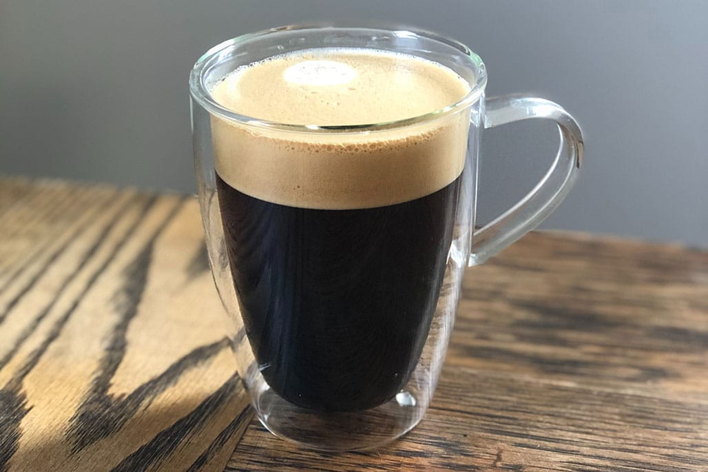

Üdvözöljük a Lucky Kávézóban!
A tökéletes hely a kikapcsolódásra és a finom kávé élvezetére.

Amit kínálunk vendégeinknek:
- Frissen pörkölt kávékülönlegességek a világ minden tájáról.
- Ízletes desszertek.
- Gyümölcslevek, üdítők és forró italok.
Barátságos légkör és kiváló szolgáltatás.
Tökéletes hely a reggeli kávéhoz, a délutáni ebédhez, vagy csak egy rövid pihenőre a nap folyamán.
Ha nem hiszi, látogasson el hozzánk, és győződjön meg róla maga!
Nyitvatartás :
Cím:
5200,Törökszentmiklós, Fő tér 12.
Telefonszám:
+36 30 123-4567
Telefonszám: +36 30 123-4567